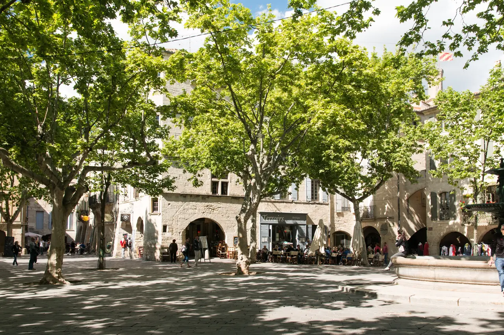

Uzès Place aux Herbes·구시가지

| 지역 | Avignon |
|---|---|
| 등급 | Must |
| 언제 | Day 21 · 9/18시간표 기준 |
| 상세 | 챕터 본문에서 보기 |
| 지도 | Avignon 실행지도 · 핀 이름 Uzès |
참고
오프라인입니다. 위키백과와 지도 링크는 연결되면 다시 동작합니다.
우제스는 수요일과 토요일 오전 시장으로 유명하다. 수요일은 7:30–14:00에 마을 중심에서, 토요일은 7:30–13:00에 플라스 오 제르브에서 열린다.
기본 방문일 9월 18일은 금요일이다. 토요시장은 열리지 않으므로 시장을 전제로 하지 않는다.
무엇인가 — 공작령 도시
우제스의 첫 정착은 1세기로 거슬러 올라간다. 님으로 물을 보내는 로마 수도교 퐁 뒤 가르가 근처에 지어지면서 우제스와 님이 함께 번성했다. 1088년 크뤼솔 다제스 가문에 '세뇌르 다제스' 칭호가 주어졌고, 이후 자작·백작을 거쳐 1565년 마침내 공작이 됐다.
Place aux Herbes
플라스 오 제르브는 구시가지의 심장이며 남프랑스에서 가장 아름다운 시장 광장 중 하나다. 수백 년 된 석회암 아케이드가 둘러싸고, 거대한 플라타너스가 그늘을 드리우며, 의도적으로 느긋한 속도로 운영되는 카페들이 늘어서 있다.
왜 우제스인가
우제스는 가르 데파르트망에 있어 프로방스 서쪽, 공식적으로는 옥시타니에 속한다. 석회암은 꿀빛이고 덧창은 바랜 파스텔이며 자갈길은 차가 다니지 않고 조용하다. 상상하던 프로방스 그대로인데 인파와 관광버스만 없다.
님에서 35분, 아비뇽에서 45분, 몽펠리에에서 약 1시간이다. 구시가지 외곽 순환로에 주차하고 걸어 다닐 수 있다. 중세 중심가는 차량 통행이 막혀 있고, 그것이 이 도시가 여전히 제 모습인 이유다.
토요시장 정보는 장소 이해용으로 보존한다. 이번 방문에서는 Place aux Herbes의 아케이드·카페·생활상점과 구시가지 구조를 본다.
실용
| 항목 | 값 |
|---|---|
| 시장 | 토 7:30–13:00 · Place aux Herbes |
| 주차 | 구시가지 외곽 순환로 |
| 아비뇽에서 | 약 45분 |
| ⚠ | 우제스 시장·주차와 Pont du Gard 운영(9월 09:00–19:00 (매표 18:30 마감))은 전날 재확인 |